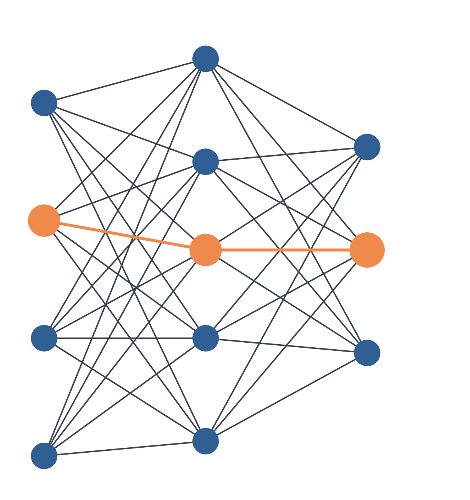

Presentazione · Intelligenza artificiale
L'AI ha sempre una risposta. Ma è quella giusta?
Fiducia, scelte e pensiero critico nell'era dell'intelligenza artificiale. Un percorso dalle basi dell'AI generativa ai bias e agli errori dei modelli, per riflettere su quanto ci fidiamo delle risposte e su come usare questi strumenti nella vita quotidiana senza smettere di pensare.